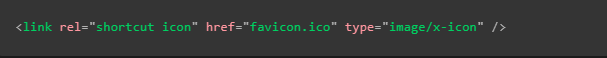
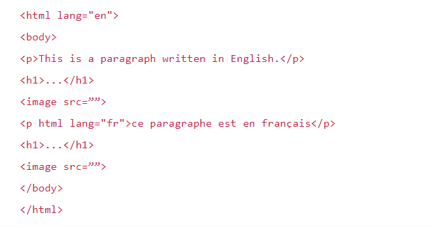

Meta datos de una paguina
Meta
Meta se utilizapara incluir y definir los metadotos de la pagina en el header, existen barios tipos de meta que pueden ser interpretados por el navegador
Un uso posible es definir que al ser compartida la pagina web en alguna red social el enlace se visualice con una descripción y alguna imagen predefinida, esto con la inteción de que la vista sea mas llamativa y brinde más información a los usuarios sobre el enlace de la paguina, por lo tanto brinde una mejor experiencia.
Para lograr esto muchas redes sociales crean suspropios protocolos de metadatos, los cuales son necesarios incluirlos en viñetas "meta" para lograr este efeto al ser compartidas en un red social


Otros usos pueden ser: definir el autor de la pagina web, esto puede ser ventajoso utilizarlo por temas de contacto con el autor.
Tambien puede ser utilizado para incluir una brebe descripción del contenido de la pagina, es bueno utilizar palabras claves ya que esto puede ayudar a que la paguina se posiscione de mejor manera en los buscadores
Atributos
- name: se utiliza para espesificar el tipo de metadato del que se trata, es decir el tipo de información que contiene
- content:espesifica el contenido del metadato en sí
Nota: una etiqueta meta con el name = description y un atributo content componen la descripción que se puede encontrar debajo del enlace de la pagina en las buscaquedas de google u otros buscadores
Definir iconos personalizados para la paguina web
Para enriqueser el diseño de la web se usan los iconos personalizados, los cuales de usan en diversos contextos
El más comun de estos es el fav.icon consiste en un icono predefinido que se mostrara en la parte del navegador que contiene las pestañas aviertas, y tambien se visualizara al guardar la paguina como favoritos
Para inplemetarlo se necesita guardar la imagen icono en el directorio del proyecto y añadir el siguiente codigo al "head". Un caso de uso real es cear varios "fav.ico", para que se apliquen uno u otro dependiendo del dispositivo desde el cual se vicite el sitio
Nota: Actualmete los navegadores aguantan formatos como png o incluso gif, sin embargo el formato .ico garantiza funcionar incluso en verciones desactualizadas
Nota: Nota: Si tu sitio web utiliza una política de seguridad de contenido (content security policy o CSP) para mejorar la seguridad, la política afecta al favicon. Si te encuentras con problemas como que el favicon no se carga, comprueba que la respuesta a Content-Security-Policy del header para la directriz img-src (en-US) en la cabecera no impide el acceso a este.
Link
Se trata de una etiqueta de metadatos, por lo cual siempre debe estar ubicada em el head de la paguina, esta etiqueta consta de varios usos entre los cuales estan:
- Contener los llamados de archivos css: Al uzarse de esta forma es necesario que se acompañe de dos de sus atributos con un valor en particular:
- rel="stylesheet": Indica que se trata de la hoja de estilos del documento
- href=: Como siempre este debe contener la ruta al archivo css en cuantión
Dependiendo de la verción del lenguaje que se maneje tambien puede ir acompañado de otros atributos complementarios como por ejemplo type="text/css"
Script
Esta biñeta se usa para introducir codigo javaScript al documento, ya sea haciendo referencia a un archivo externo, para lo cual se usa el atributo "src" para definir la ruta del archivo. O incluyendo el codigo directamente en el interior de la biñeta, en este caso no se utiliza ningun atributo en particular
Definir un Idioma
Es muy recomendable indicar el idioma en el que esta escrito el contenido del sitio web, esto con el fin de que los buscadores y servcios puedan ubicar y trabajar de mejor forma con nuestro proyecto en base a las preferebcias linguisticas del usuario:
Para esto es necesarioincluir el atributo "lang" dentro de la biñeta "html" del ducumento, el valor de este atributo debe ser un codigo ISO, el cual define cal es el lenguaje a utilizar
En HTML5 el atributo lang es aplicable a cualquier elemento html, por lo que se puede definir un lenguaje en particular para un elemeto en espesfico, e incluso aplicar más de un lenguaje en la paguina de la siguiente forma:

De esta forma los buscadores pueden entender perfectamente los lenguajes he incluso aplicar la pronuciación correcta en el caso de que se usa alguna acción de lectura en la paguina
En el caso de tener definido un lenguaje y necesitar aplicar otro en algun lugar serai así:
Si se diese el caso de ser necesario usar tansolo algunas palabras en otro lenguaje tambie se puede usar el elemeto "span" con el atributo "lan" para definir el leguaje de solo una fracción del texto de la siguiente manera

Nota: para saber el codigo de cada lenguaje basta con buscar "codigo ISO paises" en google